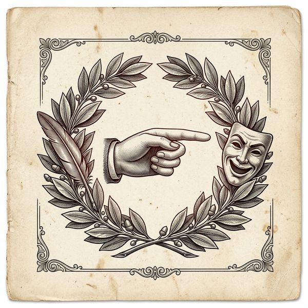

Manifeste
Oui, l'IA est là. Mais elle n'est pas seule aux commandes.

Il faut le dire tout de suite, avant que quelqu'un ne le crie dans le fond de la salle : oui, une machine est passée par là. Elle a tenu le crayon une seconde, fredonné un demi-refrain, esquissé un visage. Et alors ? On a bien laissé le piano à des gens qui n'avaient pas inventé le piano.
Ce site rassemble des textes, des chansons et des images faits avec l'aide de l'intelligence artificielle. Pas par elle. La nuance tient dans un poignet : celui qui reprend, oriente, corrige, coupe, recolle, recommence et finit par signer. La machine propose mille banalités scintillantes. Le travail, c'est d'en jeter neuf cent quatre-vingt-dix-neuf et de tordre la dernière jusqu'à ce qu'elle ressemble à quelque chose.
Artificiel, peut-être. Automatique, jamais.
Sur la légitimité
On me demandera si j'ai le droit. Comme si l'art avait jamais distribué des cartes de membre. J'ai le manque, c'est déjà un titre. J'ai voulu écrire des chansons sans savoir la musique, raconter des scènes sans monter sur scène, dessiner des affiches d'une main qui tremble. La machine n'a pas comblé ce manque : elle l'a rendu praticable. Le désir était là avant. Il sera là après. C'est lui qui décide, pas le moteur.
Sur le goût du faux
Tout ici est un peu maquillé. Les souvenirs surtout. La boulangerie de l'enfance était sans doute plus petite, les copains moins héroïques, les cancres moins drôles. Je n'ai rien rectifié — j'ai préféré l'embellissement honnête au document exact. C'est une revue satirique, pas un casier judiciaire.
Sur l'élégance de travers
Je n'aime pas ce qui est trop droit. Les phrases qui boitent ont une démarche. Les refrains tordus restent en tête. Les images de travers regardent quelqu'un. Le propre, le lisse, l'optimisé — gardez-les pour les présentations trimestrielles. Ici on préfère une cravate mal nouée à un costume parfait.
Voilà. Si tout cela vous donne des boutons, la porte est large et la nuit est douce. Sans rancune. Pour les autres, le rideau est déjà levé, le micro grésille, et le décor, comme toujours, tient à peine.
— Kasperphi